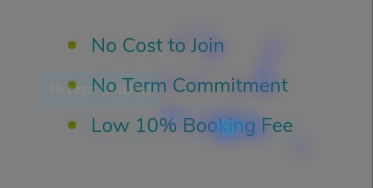
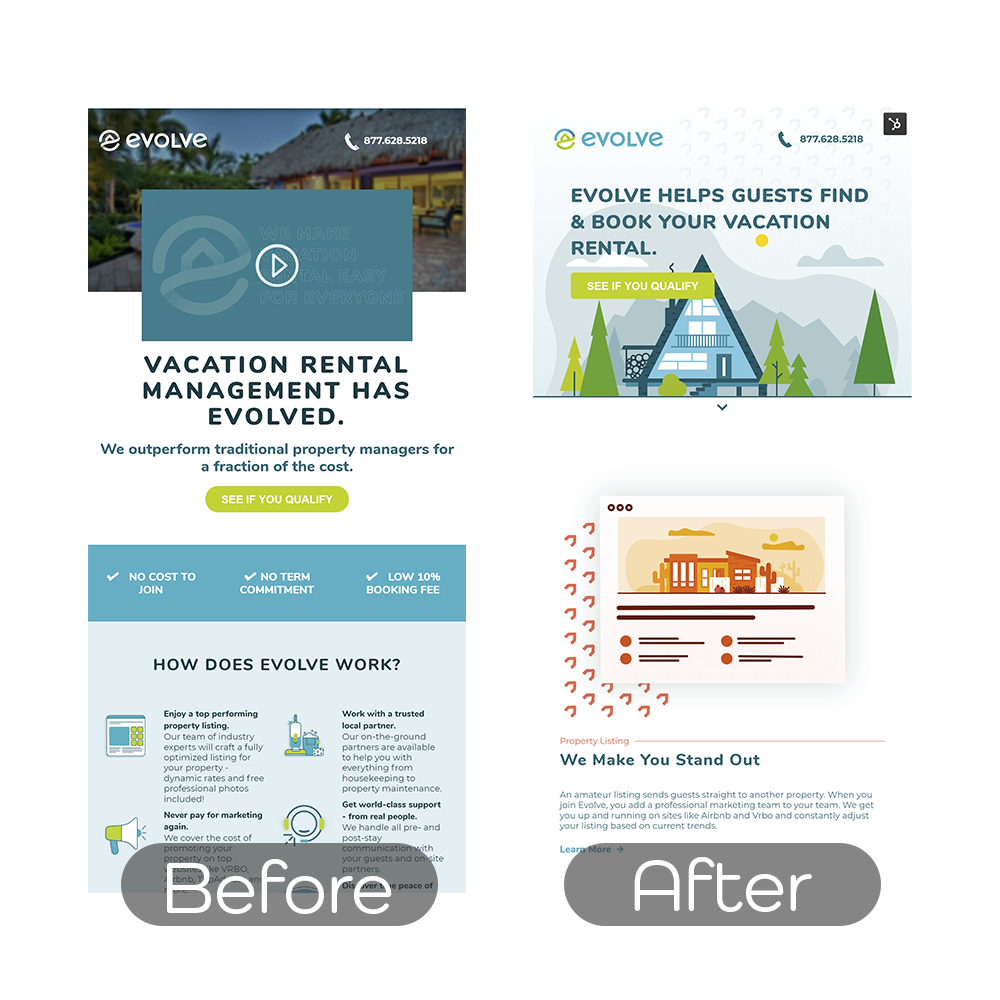

Landing Page Redesign
Year: 2020
Duration: 3 months
Outcome: 29% increase in lead generation.
What
A landing page redesign focused on clearly articulating Evolve Vacation Rentals management solution to short-term rental home owners.
Why
User research revealed that a percentage of short-term rental owners didn’t fully understand Evolve's property management services after engaging with an educational landing page.
How
Helping short-term rental owners understand Evolve’s service offering meant focusing on scannability along with more clear and concise communication.
Phase 1: Research
Research methods used:
Session recordings, heat-mapping, scroll depth, click tracking, & moderated user interviews (coding & affinity mapping).

Heatmapping
In our map, hot spots revealed that users were trying to click on unlinked text, perhaps to try and learn more. The image above shows users trying to click on the text “low 10% booking fee." We’d later find out, in user interviews, that this language was extremely confusing. "Is this what we pay our the person booking our property," said one user.
Session Recordings
Users were exhibiting erratic scrolling behavior (back & forth movement) in a large percentage of recordings. At first, this wasn’t super alarming. In order to get to this landing page users clicked through a Facebook advertisement, which meant some of the erratic scrolls observed were likely a user demonstrating infinite scroll behavior. Other behavior in several interactions made us dig a bit deeper though. Within some of those sessions, users would click our lead generation form button, land on the form, and then immediately return back to the landing page. Additionally, we noticed hover states, where a user would concentrate on a section or paragraph before scrolling back and forth again. With these observations we began to hypothesize that users were engaging in information seeking behavior. It was believed that users were looking for keywords, mentioned in the Facebook advertisement, or seeking more details about our service offering.
Scroll depth & click tracking
Scroll depth markers indicated that 57% of users were dropping off at the 50% marker. This means that half of the users on this page only made it halfway through the page before leaving. On this landing page there were 3 buttons which led to our form. One at the top of the page, one in the middle, and one at the very bottom. The top button had the highest percentage of clicks, while the bottom had the lowest percentage of clicks. With this quantitative data, it seemed that all observations were pointing in the same direction, users were seeking more information. To confirm, we wanted to take this one step further and run some user interviews.
Moderated User Interviews
For the interviews, I teamed up with one of the UX Researchers on our product team. I love teaming up with others to conduct interviews because 1) outside perspective always enhances the outcome of any research and 2) it makes it easier to tag team (1 person can take notes while the other asks questions). I didn’t fill the other researcher in on the details from the previous research and had her ask questions during each session, to remove any bias. First, we found interviewees who owned a short-term rental home. Then we conducted a 30 minute interview with each interviewee. Going into the interviews there were several objectives. 1) see if users (short-term rental owners) understood our service offering and 2) understand their thoughts and feelings. We asked users to share their thoughts out loud as they navigated the landing page. Then after 5 seconds we asked “what kind of service do you think this company offers?” 92% of interviewees couldn’t articulate what our service offering was after 5 seconds. We then asked the users to continue to share their thoughts as they went through the page. At 2 minutes we asked interviewees the same question again, "what kind of service do you think this company offers?” 100% of them still couldn't properly articulate our service offerings. At this point we knew all our research pointed in the same direction, unclear communication about our service offering was potentially preventing users from scheduling a call with our sales team.
Phase 2: Reimagining the landing page experience
Armed with fresh research findings, we moved into brainstorming and storyboarding. Going into the redesign, we knew a few key factors needed to be taken into consideration:
- Scannability/white space
- Clear, concise communication about our service and offerings.
- Pathways for users to explore more in depth information about the particular details of our service offerings.
Layout
First, we iterated on the layout of the page to get several different structures designed for testing. Keeping elements spaced apart was key. We also wanted to ensure a natural story progression. This is what we do, why it's important for you, here is what we offer, this is how much it costs, and here is some awesome feedback from people we’re working with currently.
Storyboarding
Next, the copywriters and I brainstormed and brainstormed some more on ways to communicate what Evolve did for short-term rental homeowners. From there we developed storyboards to fit into the layouts we had developed. Our big goal here was to keep everything high level, to keep the user’s eye focused on verbiage that caught their attention. More in depth information was made available through links that would open modals on the page.
The Outcome
A 29% increase in lead generation. Users scrolled deeper into the page and engaged with the click through links for more information about our service offerings.
While the primary objective was to improve the users experience we had a secondary initiative to implement more quantitative measures. Incorporating more clickable elements gave us an opportunity to evaluate more quantitative observations in the future.
Sticking with the scientific approach; observe, hypothesize, and experiment yielded positive results. We stuck to the statistical measures and sample sizes outlined in the begining of the project. And because of that we continued to see positive results from these changes for months to come. It also gave us a ton of new observations to work with for future experimentation.